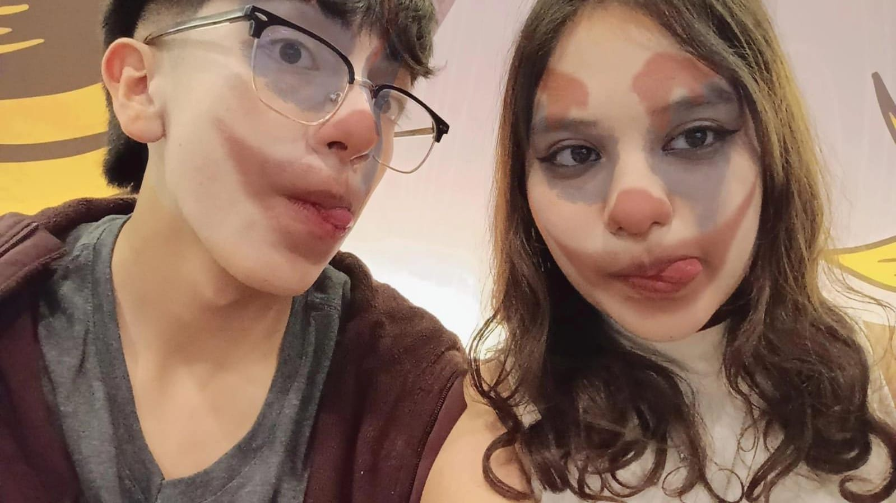
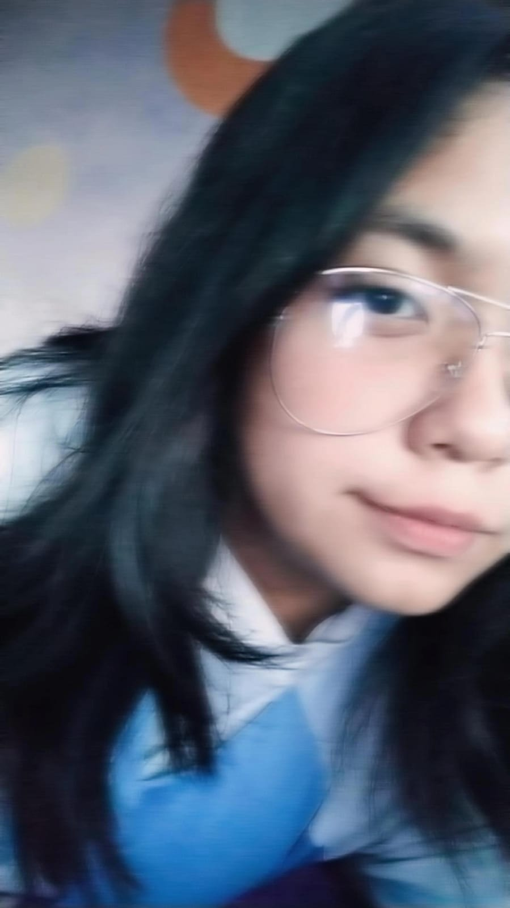

| Emi |
Nos conocíamos desde la primaria sin embargo no hablabamos, fue en secundaria cuando comenzamos hablar y de ahí surgió una gran amistad, actualmente es mi pareja sin embargo sigue siendo mi mejor amigo, con el puedo contar en todo, siempre trata de hacerme sentir segura y cómoda, es un chico muy ocurrente pero muy listo, siempre hace lo posible por sacarme una sonrisa y nunca hace falta que me diga el cariño que me tiene por que siempre hace lo posible por demostrarlo y nunca me ha dejado sola, lo admiro y amo demasiado. |
 |
| Alejandra |
Tengo ya 10 años de amistad con Alejandra, la conocí en primaria y apesar de todos los cambios hemos permanecido juntas, es mi mejor amiga y la quiero de una manera inexplicable, es una chica muy linda tanto físicamente como en el interior, tiene una sonrisa muy linda y su forma de ser es única, con ella puedo contar para todo, es complice de cada una de mis locuras y yo de las de ella. |
|
| Jaen |
Jaen es una de mis mejores amistades, incluso es como un hermano para mi, siempre estamos el uno para el otro, aunque haya malos ratos siempre está, es alguien carismático y ocurrente con quien comparto muchas anécdotas y le tengo un gran aprecio. |
|
| Enrique |
Fue muy rara la manera en la que nos conocimos sin embargo con el tiempo nos hicimos más cercanos y es una gran amistad, siempre me recuerda que debo seguir adelante y me apoya mucho, hace lo posible para verlo algo positivo a las cosas y hacerme reír, es un poco loco pero igual es muy listo, lo quiero mucho. |
 |
| Ari |
A ella la conocí en la pandemia, fue y es una de mis amistades más importantes, pues estuvo a pesar de todo, es una chica muy bonita y aunque casi ya no hablemos o nos veamos seguido siempre contare con ella y ella contara conmigo porque esa conexión nunca se va |
 |
| Fati |
La conocí en primer semestre, fue una casualidad muy bonita, desde el principio note que era una chica muy linda en todos los aspectos y alguien muy enfocada, es muy amable y agradezco su apoyo, le tengo un gran aprecio |
|
| Yare |
Fue con la primera que hable en Voca 3 y desde el principio note su personalidad única y que era carismática, es alguien aplicada y linda, agradezco su amistad y todos esos momentos de risas. |
|